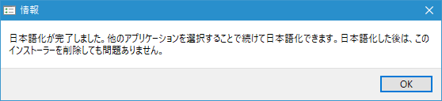

Eclipseの日本語化のためにPleiadesプラグインの導入
Eclipseでのメニューや表示されるメッセージを日本語化するためのPleiadesプラグインを導入する手順について解説します。
Pleiadesプラグインをダウンロードする
次のURLから開始します。
PleiadesにはEclipse本体とセットになっているもの(Pleiades All in One)もあるのですが、今回はEclipseは別でインストールしていますのでPleiadesプラグインだけをダウンロードします。「Pleiades 本体ダウンロード」と書かれたブロックを見てください。
今回はWindows10(64bit)の環境で利用するため「Windows」と表示された箇所をクリックして下さい。
ダウンロードが開始されますので任意の場所に保存して下さい。ダウンロードは以上で終了です。
Pleiadesプラグインを使ってEclipseの日本語化を行う
ダウンロードした「pleiades-win.zip」ファイルは圧縮ファイルとなっています。ファイルを解凍しまず適当なディレクトリに保存して下さい。次のようなファイルが含まれています。
「setup.exe」をダブルクリックして下さい。次のような画面が表示されます。「選択」をクリックして下さい。
ファイル選択ダイアログが表示されますので、Eclipseをインストールしたディレクトリにある「eclipse.exe」を選択して下さい。
「日本語化する」をクリックして下さい。

次のダイアログが表示されればEclipseの日本語化は完了です。「OK」をクリックして下さい。

「終了」をクリックして画面を閉じて下さい。Pleiadesプラグインのファイルは削除しても構いません。
Eclipseを「-clean」を付けて起動する
それではEclipseを起動するのですが、Pleiadesを更新したり他のプラグインを追加・更新した場合は必ず起動オプションに「-clean」オプションを指定して起動して下さい。実際にはEclipseをインストールしたディレクトリにある「eclipse.exe -clean.cmd」をダブルクリックします。
ワークスペースの選択ダイアログが表示されます。このダイアログも日本語化されています。「起動」をクリックして下さい。
ワークベンチが表示されます。メニューなどが日本語になっていることが確認できます。
-- --
Pleiadesプラグインを使ってEclipseを日本語化する手順について解説しました。
( Written by Tatsuo Ikura )

著者 / TATSUO IKURA
初心者～中級者の方を対象としたプログラミング方法や開発環境の構築の解説を行うサイトの運営を行っています。